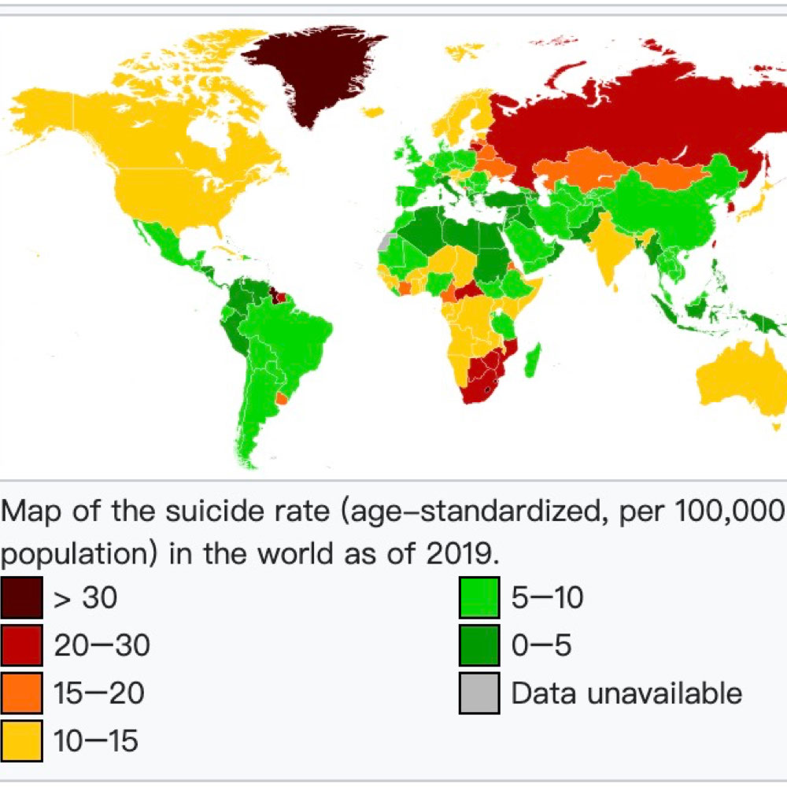
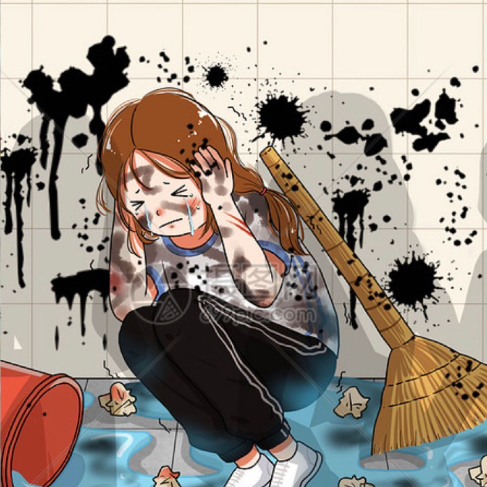

We are a website dedicated to transmitting knowledge about suicide prevention with a focus on Chinese youth. You are a wonderful person and have a great day!


Suicide Prevention& Psychotherapy
Suicide
Background Information
According to the World Health Organization (WHO), over 700,000 individuals pass away due to suicide each year across the world. Among adolescents and young adults, suicide is ranked as the fourth leading cause of mortality worldwide (Shin et al., 2022).
The World Health Organization reports that there are at least 20 suicide attempts for every completed suicide. Over the past decade, there has been a growing recognition of suicide attempts among adolescents in China (Hu et al., 2015).
Suicide is preventable and we need to be aware of the importance of suicide prevention and suicide intervention.
Data
Differences Between China And Other Countries

Specific Data
16.6% of junior high school students had a suicidal intention (Wang et al., 2020).
According to the latest mortality database of the World Health Organization (WHO), the global average suicide rate among adolescents aged 15-19 is 7.4 per 100,000, with males (10.5) higher than females (4.1); This applies to almost all countries except a few (including China) where female suicide rates are higher than male ones (Wasserman et al., 2005).

China's Unique National Situation
Negative campus gossip was positively correlated with suicidal tendencies and increased suicidal tendencies by increasing academic burnout (Wang et al., 2020).
Rural High School Students in Less Developed Areas of China who had adverse childhood experiences or identified as lesbian, gay, or bisexual (LGB) were found to be more likely to engage in non-suicidal self-injury (Li et al., 2019).
Individuals who are at risk of suicide often struggle with finding meaning in their lives. Thus, by helping patients comprehend the significance of life, we can assist them in altering their outlook on life and enhancing their capacity to reconstruct a meaningful life, and can ultimately aid in the prevention of suicide (Søberg et al., 2022).
The analyses indicated that interventions are necessary at each stage of victimhood, and there is a need for increased online efforts. Since many adolescent cases involved school-related issues, such as poor performance or absenteeism, we suggest that primary to tertiary schools should make greater efforts to identify and address personal difficulties faced by students who are struggling academically (Zhu et al., 2022).
What We Should Do
Actions we should take
Social Environment
Increase social inclusion (for the LGBT community, underachieving kids , etc), reducing youth stress at the societal level. Slowly increase inclusion of all groups from each generation of education, including teaching children that poor grades do not make you worthless. It is also necessary to set up a suicide hotline, and it is also important to reassure the youth after a suicide attempt.
School Intervention
Every school should hire at least one counselor and encourage students to go to counseling. Schools should offer regular mental health seminars and give mental health tests to students. Teachers should pay attention to the mental health of students in addition to their grades and stop bullying in schools. Schools also need to stop instilling the notion that grades are the only way to go and tell kids that while grades are important, people with bad grades have strengths in other areas. With less pressure on the school side, the probability of youth suicide will be reduced.
Family Understanding
Parents have a great influence on their teenagers. Many Chinese parents feel that teenage suicide is due to the psychological fragility of children in this generation, while they may think that their own children are not so psychologically fragile. This is when parents inadvertently put a lot of pressure on their children (demands for grades, strong inside, conformity to mainstream demands, etc) and ignore their emotions and requests for help. If parents can think more from the child's point of view and not consider their usual emotional outbursts as irrational, but carefully analyze the causes and give the child the most support, it will reduce the probability of teenage suicide.
Peers Supporting
Adolescents in adolescence have a lot can't say to their parents and teachers, so communication and support between partners is very important at this time. Adolescents can pay more attention to their classmates who are in a bad mood and give them timely support.
Psychology Education
Nowadays, the Chinese public generally does not have the correct knowledge about psychology and mental illness. Therefore, we need to promote and popularize the knowledge of psychology in textbooks and on social media. Tell teenagers and their parents that mental illness is not that scary and is only one kind of disease that also needs to be detected and treated early.
Psychotherapy
Once a teenager is found to have symptoms such as severe depression and anxiety, or suicidal or self-abusive tendencies, parents or teachers as well as the teenager themselves need to speak up in a timely manner and seek help from a psychologist for corresponding psychological treatment.
psychotherapy
Three psychotherapeutic approaches suitable for application in suicide prevention

Existential Therapy
Existential therapy addresses the anxiety that arises when clients confront the fundamental conflicts of human existence, and the therapist's role is to assist clients in taking personal responsibility for their decision-making. This approach emphasizes the significance of finding meaning in life, which is also crucial for preventing suicidal ideation.
Keywords: Meaning
If parents teach the child that all free impulse expression is undesirable and all counter will is bad, the child suffers two consequences: suppression of his or her entire emotional life, and stunted, guilt-laden will. The child then grows into an adult who suppresses his or her emotions and regards the very act of willing as evil and forbidden.
— Irvin D. Yalom, Existential Psychotherapy
Cognitive Behavior Therapy (CBT)
Psychological problems are based, in part, on faulty or unhelpful ways of thinking. People suffering from psychological problems can involves efforts to change thinking or behavioral patterns, thereby relieving their symptoms and becoming more effective in their lives (APA). The main emphasis of CBT is to empower individuals to become self-sufficient in managing their own mental health by teaching them coping skills that enable them to alter their thinking patterns, regulate their emotions and modify their behaviors. This approach primarily emphasizes moving forward in time and developing more efficient ways of handling life's challenges, rather than dwelling on past causative factors (APA).
Keywords: Changing thinking or behavioral patterns, Moving forward
Because of its clear research support, CBT dominates the international guidelines for psychosocial treatments, making it a first-line treatment for many disorders.
— Daniel David
Mindfulness Therapy
Include Mindfulness-Based Stress Reduction (MBSR) and Mindfulness-Based Cognitive Therapy (MBCT). It’s a facilitated group experience with focusing on experiential learning and self-discovery emphasized. Allowing things to be as they are and cultivating love and care for ourselves.
Keywords: Nonjudgment, Acknowledgment
How we pay attention to the present moment largely determines the character of our experience, and therefore, the quality of our lives.
— Sam Harris